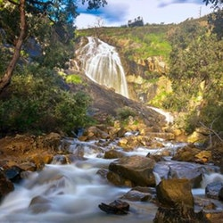

You can visit the most beautiful remaining natural destinations.
Between those destinations are the following:
Feel free to ask if we go to a destination you'd like to visit.
Situated in a broad valley near the eastern end of the historic Khyber Pass, close to the border with Afghanistan, Peshawar's recorded history dates back to at least 539 BCE, making it the oldest city in Pakistan and one of the oldest in South Asia.[7] Peshawar was the capital of the ancient Kushan Empire, and was home to what may have been the tallest building in the ancient world, the Kanishka stupa.[8] Peshawar was then sacked by the White Huns, before the arrival of Muslim empires. The city was an important trading centre during the Mughal era before serving as capital for the Durrani Empire.

Onitsha is a city located on the eastern bank of the Niger River, in Nigeria's Anambra State. A metropolitan city, Onitsha, is known for its river port, and as an economic hub for commerce, industry, and education. It is the host to the Onitsha Main Market, the largest market in Africa in terms of geographical size and volume of goods. In the 2006 Nigerian census, Onitsha had an estimated city proper population of over quarter a million people, and, as of 2016, had an estimated urban population of 7,425,000.[4] The indigenous people of Onitsha are Igbo and speak the Igbo language. The Onitsha people like to be referred to as Ndi Onicha.
Zabol is located near Lake Hamun and the region is irrigated by the Hirmand River. Lake Hamun is a seasonal lake that is often dry. The people of Zabol are predominantly Persians who speak a variant of the Persian language and known as Sistani or Seistani which is very similar to Dari, also known as Afghan Persian, and a minority of Baluchs who speak Baluchi, a south eastern Iranian language.
Rawalpindi, commonly known as Pindi (Punjabi: پنڈی), is a city in Punjab, Pakistan. It is the fourth-largest city in Pakistan by population, while the larger Islamabad Rawalpindi metropolitan area is the country's third-largest area. The economy of Rawalpindi is interlinked with Islamabad, and the two are jointly known as the "twin cities". The city is the administrative seat of the Rawalpindi District.
Kaduna is the state capital of Kaduna State in north-western Nigeria, on the Kaduna River, is a trade center and a major transportation hub for the surrounding agricultural areas with its rail and road junction. The population of Kaduna was at 760,084 as of the 2006 Nigerian census. Rapid urbanization over the past decade has created an increasingly large population, now estimated to be around 1.3 million. Kaduna's name derives from the Hausa word "kada" for crocodile.